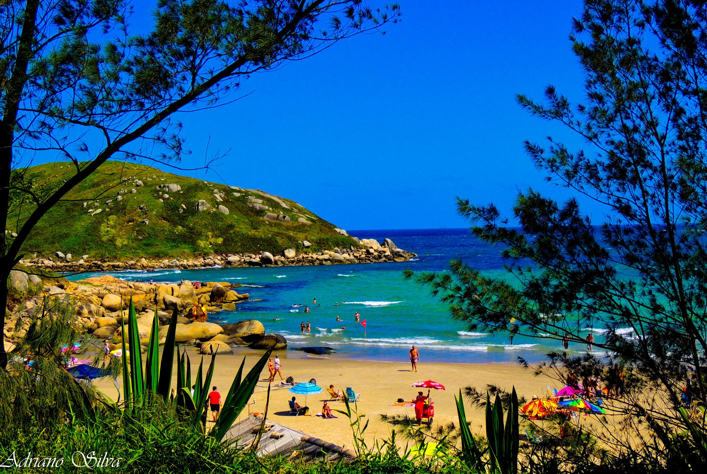

Praia do Canto

Escondidinha entre costões e trilhas, a Praia do Canto é um paraíso quase intocado. Com mar cristalino e visual rústico, é perfeita pra quem busca sossego e conexão com a natureza.
Praia do Rosa
No litoral sul de Santa Catarina, a Praia do Rosa é famosa pelas ondas perfeitas e clima descontraído. É um destino queridinho de surfistas e quem curte natureza e trilhas.
Barra do Ibiraquera
Pertinho da Praia do Rosa, a Barra do Ibiraquera mistura mar, lagoa e dunas. Perfeita pra quem curte kitesurf, stand up paddle ou só relaxar num lugar super tranquilo e bonito.